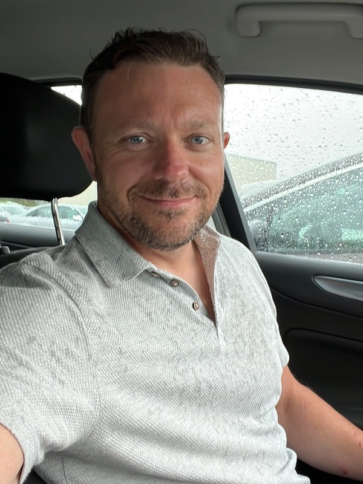

How It Started
It started with a question I asked some ornithologists in Luxembourg: what doesn't work about your current setup?
They told me. Extension cords running hundreds of metres through forests — with animals chewing through them. Waking at 3am to manually trigger playback. Schedules that ran on clocks when birds respond to light, not time.
They knew exactly what they needed. I asked them to write it down. Then I built it.
That was the straightforward part.
The hard part was power. A solar-powered device that dies during three weeks of winter cloud and doesn't recover isn't autonomous — it's just a problem that moved from a researcher's desk to a forest somewhere. Getting that right took months of field testing in conditions that revealed everything bench testing hides.
Somewhere in that process I realised I loved doing this. Not the idea of it. The actual work — the listening, the building, the failing, the fixing.
The more I learned the more I could see. Every research paper I read, every circuit I built, every field failure I debugged — it refined the mental picture of what was actually possible. Embedded systems, signal processing, machine learning, RF electronics — each one opened up new ways of thinking about the problem. I'd solve one thing and realise there was a deeper layer worth solving underneath it.
That's still happening. I don't think it stops.
I had no plan to start a business. But I was passionate about the work, so I decided to structure one around it — not around profit, but around a simple question: what do researchers and conservationists actually need, and can I build it?
What I Believe
There are people doing genuinely important work in conservation technology. I have a lot of respect for that — building tools for the field is hard, and anyone who has shipped something real and useful has earned it. This is my interpretation of some unsolved problems. My specific take on a specific set of challenges.
Embedded systems and electronics is an art form like any other. The constraints are real and severe — power budgets measured in microamps, memory measured in kilobytes, hardware that has to survive months unattended in conditions you can't fully anticipate. Working within those constraints to build something that genuinely solves a problem requires taste and judgment as much as technical skill. I find that deeply satisfying.
Better tools mean better data. Better data means better science. Better science means better decisions about ecosystems that everything depends on. That's the chain I'm trying to contribute to. Not by replacing what exists, but by solving the problems that haven't been solved yet.
Right now GaiaForge is just me. One engineer, one mission. I hope that changes someday. I suspect there are researchers, engineers, and conservationists out there who share this — people who believe the right tool, built with genuine care for the specific problem, makes a real difference. People who see what's possible and want to help build it.
I haven't met most of them yet. But I'm building anyway. And I'm listening.
The Journey
July 2024
A bat monitoring event in Luxembourg. Watching conservation researchers work around the limitations of equipment not designed for their reality, I find myself asking a question I can't put down: what would you build if you actually understood what these people needed? I start asking. They start answering.
August–October 2024
Development of the Orpheus prototype begins in spare time alongside a full-time job. Testing amplifiers, codecs, touchscreens, solar charging systems. The design evolves through direct conversations with researchers who describe exactly what field deployment demands — and what every existing solution gets wrong for their specific use case.
November 2024
GaiaForge is officially founded — still a side project, running on evenings and weekends. The mission is simple: build technology that helps researchers do better work in the field.
April 2025
First Orpheus Pro unit deployed at the Schlammwiss nature reserve in collaboration with natur&emwelt, Luxembourg. A solar-powered autonomous playback system running in a real nature reserve, used by real researchers. The concept works. Now begins the harder work of making it reliable.
June 2025
Provisional patent filed covering the Orpheus Pro and Basic designs, protecting the approaches developed for autonomous field operation.
July 2025
A breakthrough in power efficiency reduces consumption by approximately 67% — from 150mA to 50mA. The gap between "works on a desk" and "works in a field for months" is closing.
August 2025
First Orpheus Basic deployed — a more accessible entry point for researchers while maintaining the autonomous operation capabilities that make it genuinely useful.
September 2025
Power management moves from test breakout board to a custom PCB with smart restart logic. A major step toward production-ready hardware — smaller, more reliable, designed for the real world.
October–November 2025
Six new Orpheus Basic units deployed for fall and winter testing — the conditions that reveal what summer testing hides. Each failure becomes an investigation. Each investigation becomes a fix.
December 2025
Companion app enters final development. Seven units planned for the bird ringing station in Luxembourg for spring deployment.
March 2026
Seven Orpheus Basic units deployed — powered only by the sun. Real researchers, real tools, real conditions.
HiveGuard enters audio validation phase. A beekeeper in Tanzania whose colonies kept absconding and didn't know why started a different conversation — about what beekeepers actually need. The answer is early warning. HiveGuard is designed to detect Varroa mite infestation weeks before visible symptoms appear, combining acoustic analysis with VOC chemical fingerprinting of the hive atmosphere. Real beehive audio from known colony states is now being collected to validate the classification system.
SprigRig continues development — a modular multi-zone environmental control system for growers who need something they can actually customise. Built it for myself. Turns out other growers have the same frustrations.
June 2026
After nearly two years of field testing and iterative refinement, Orpheus is stable and reliable in real-world deployments. The work that got it here is mostly invisible — careful attention to the long tail of failures that only show up after weeks of unattended operation in conditions no bench test anticipates. The kind of work that's invisible when it's done right, and catastrophic when it isn't.
Orpheus Basic is now available to order.
About Me

Travis Butler
Founder & Embedded Systems Engineer | Veteran
I'm an embedded systems engineer, veteran, and conservation technologist based in Rheinland-Pfalz, Germany, with a degree in Electronics Systems Engineering and a concentration in Mechatronics.
My professional background is in industrial automation — building systems that have to work reliably, repeatedly, without supervision. That discipline translates directly to conservation technology, where unreliable hardware doesn't stop a production line. It means a researcher drives hours to find a device that stopped working.
I didn't come to this with a plan. I came with a question, a willingness to listen, and an inability to accept that a problem wasn't solvable. Everything I've learned along the way — I learned because a specific problem required it.
If you're a researcher, conservationist, beekeeper, or someone who shares this mission — I'd genuinely like to hear from you.
Collaborators & Testers
Research Partners
Researchers and conservation professionals across Luxembourg and beyond provide field testing, domain expertise, and the honest feedback that turns prototypes into tools that actually work. Their willingness to use early hardware in real conditions — and tell me exactly what breaks — is what makes GaiaForge possible.
GaiaForge is one person with a mission. But it doesn't have to stay that way. If you're an engineer, researcher, or conservationist who wants to be part of building something that matters — I'd like to meet you.
Just me, a soldering iron, and a stubborn refusal to accept "that's not possible."
Hiring is on the roadmap. For now, the coffee budget covers one.
Share in the Journey
If you're a researcher, conservationist, engineer, or someone who believes the right tools make a real difference to how we understand and protect the natural world — I'd love to hear from you.